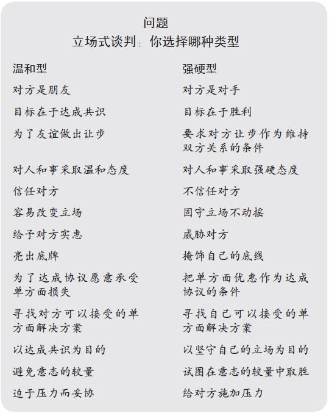

不论谈判是有关一项合同、家庭内部纠纷，还是国家间的和平协议，人们常常在立场上纠缠不清。双方站在各自的立场上，为自己争辩，最后作出一定的妥协，找到双方都能接受的折中办法。这种谈判方式最具代表性的例子是顾客与旧货店老板之间的讨价还价。
| 顾客 | 老板 |
|---|---|
| 这个铜盘子什么价钱？ | 你眼光不错，75美元怎么样。 |
| 别逗了，这儿有块压伤，我出15美元。 | 什么？您要是诚心买，我还能考虑考虑。15美元，开玩笑吧？ |
| 那好，我出20美元，75美元太离谱了。给我个合理的价钱。 | 小姐，你砍价真够厉害，60美元拿走得了。 |
| 25美元。 | 我进价也比这高多了！你诚心买吗？ |
| 37.5美元，我最多就付这个价。 | 你看看上面的图案，到明年这样的盘子价格能翻1倍。 |
就这样谈下去，他们也许会达成共识，也许毫无结果。
谈判的任何方法都可以通过三方面的标准来衡量：如果有达成共识的可能，就应该达成明智的协议；谈判应该有效率；增进或至少不损害双方的关系（明智的协议是指协议尽可能保障双方的合法利益，公平解决双方的利益冲突，协议持久性强，并考虑了社会效益）。
上面举的例子反映了最常见的谈判方法，就是不断采取新立场，放弃旧立场。
就像上面那位顾客和店老板所做的那样，立场在谈判中起了一定作用。它告知对方你的需求，在前景不明朗、存在一定压力的情况下提供了一个立足点，最终可能会产生自己能接受的结果。但通过其他方法也能起到上述作用，而且在立场上纠缠不清使双方无法实现上述三个基本标准：达成明智的协议、有效率地谈判以及友善地谈判。
如果双方就各自的立场讨价还价，他们通常会抱着立场不放。你越是声明自己的原则，保护自己的立场，你的立场就越坚定。你越想让对方明白改变你最初的立场是非分之想，你就会越死守自己的立场。直到把你的自我形象当成了你的立场。你现在又多了一个目标，就是保存自己的脸面—把今后的行为和过去的立场联系起来，这就使得谈判越来越不可能就双方的最初利益达成共识。
肯尼迪总统时期美苏全面禁止核试验谈判的失败，恰好说明了在立场上纠缠对谈判造成的危害。当时主要的问题是：美苏双方每年允许对方到自己境内被怀疑有核试验活动的地区检查多少次？苏联方面当时最后提出是3次，而美国坚持最少10次，由于立场问题，谈判就此破裂。而双方都没有想明白一个事实，即检查是指1个人四处看1天呢，还是100个人不加选择地检查1个月。双方都没有在设计检查程序上动脑筋，使它既满足美国在核查方面的利益，又能实现尽可能减少对方干预本国的愿望。
由于双方将更多的精力投入到立场上，各自真正关心的问题被忽略掉了，达成协议的可能性也变小了。最后的谈判结果也许只是机械地反映各自最终立场的差距，而不是真正认真地考虑双方的合法利益，结果往往也就不那么令双方满意了。
传统的谈判方式可能使双方达成协议，比如铜盘子的价格；也可能令他们不欢而散，比如实地检查核试验活动的次数，但两者都要耗费大量时间。
在立场上纠缠不清会阻碍双方达成协议。为了使最终结果有利于自己，双方的起步都很极端，而且死守不放，还欺骗对方，隐瞒自己的真实观点，只有迫不得已的时候才做一点点让步。以上每个因素都会影响双方达成有效协议。双方起步越极端，让步越小，谈判所需的时间就越长，所花的精力也就越多。传统的谈判方式还需要谈判者作出大量的决定，如能给对方什么条件，该拒绝什么条件，可能作出多大让步等等。决策过程最为费时费力。每一项决定不仅是向对方让步而且可能会产生压力，从而导致再次让步。因此谈判者往往拖延时间，威胁要离开谈判桌，阻碍谈判进程，或采取其他一些花招，这只能使双方投入更多的时间和精力，增加不欢而散的可能性。
在立场上讨价还价完全是一场意志的较量。每个谈判者都坚持自己的立场，本来是双方合作解决的问题，却成了一场你死我活的斗争。每一方都试图单凭意志力使对方退却。“我不会让步的，你要是想和我去看电影，就得看《马耳他之鹰》，否则没门！”当一方看到自己的合理要求由于对方的强力压制而得不到重视时，愤怒和憎恨往往占据上风。因此在立场上讨价还价会影响甚至破坏双方的关系：一起合作多年的企业集团可能会分道扬镳；邻居们从此不再说话；一次唇枪舌剑带来的不愉快也许一辈子都消除不了。
尽管人们总是习惯将谈判视为两个谈判对手之间的事情，但实际上几乎所有谈判都涉及更多人。有时会有好几方坐在谈判桌旁，有时每一方都包括普通谈判成员、高层官员、董事会甚至各种委员会，这些都是谈判中要打交道的对象。谈判涉及的人越多，立场式谈判带来的弊病也越多。
如果像联合国会议那样有一百多个国家坐在一起谈判，那么立场式谈判几乎是不可能的。统一所有人的意见很难。互惠式妥协也难于实现：向谁让步呢？即使达成了成千上万个双边协议，也谈不拢一个多边协议。在这种情况下，立场式谈判往往促使谈判各方组成不同派系，其共同利益通常流于表面形式而不具有实质性。在联合国，类似的集团有南北之分、东西之别。由于一个集团由多个成员组成，要采取共同的立场绝非易事。更糟的是，一旦各国历尽周折取得了一致立场，要改变就更困难了。此外，实际参与谈判不光是坐在谈判桌边的人，还有他们的上级，这些人虽不在谈判现场，但采取任何立场都要经过他们的同意，立场一旦敲定，就很难有回旋的余地。
许多人都认识到了立场式谈判的高昂代价，尤其是它对谈判各方关系造成的损失。他们希望通过一种更温和的谈判风格避免冲突，把谈判对方看做是朋友而不是对手。他们强调达成共识的必要性，而不是以自己占上风为目的。标准的温和型谈判步骤是提出条件和作出让步，信任对方，持友好的态度，为避免摩擦作出必要妥协。
下面的表格分析了两种立场式谈判—温和型与强硬型。大多数人认为他们对谈判方式的选择介于两者之间，你希望温和还是强硬呢？还是选择一条折中路线？

温和型谈判方式强调建立和维护关系的重要性。在家庭内部和朋友之间商讨时往往采取这种方式，它比较有效，至少可以很快产生结果。由于双方力求做到更加宽容大度，达成协议通常不成问题，但却不一定是明智的协议。虽然结果也许不像欧·亨利的故事一样悲惨：一对爱恋而又贫穷的夫妇互相买礼物，妻子卖掉秀发给丈夫买了一条漂亮的表链，而不知情的丈夫却卖掉怀表为妻子买了一套美丽的发卡饰品；但是，以强调双方关系为主的谈判往往会导致双方无法取得明智的协议。
如果你温和，而对方强硬，那结果就不妙了。在立场式谈判中，强硬者主导温和者。如果强硬者坚持要对方作出妥协并不断威胁对方，而温和者为避免冲突不断让步，坚持以达成协议为重，那这样的谈判是不公平的。强硬者占了便宜。谈判会有结果，但却不一定明智。它偏向于强硬者而不利于温和者。如果对方步步紧逼，而你却一让再让，那就等着倾家荡产吧。
如果不愿意在温和与强硬两者之间选择，你可以改变谈判方式。
谈判有两个层次：第一个层次是解决实质性问题；第二个层次往往比较含蓄，它关注解决实质性问题的程序。第一个层次的重点可以是你的工资、租赁条件以及价格问题。第二个层次关心的是如何解决实质性问题：通过温和、强硬或者其他方式。这是有关游戏的游戏，即“游戏中的游戏”。谈判中采取的每一个举动不仅关系到房租、薪水或其他实质性问题，而且有助于建立游戏规则，使谈判以原有的方式继续进行下去，或是有所改变。
第二个层次通常容易被人们忽略，因为许多决定都是自然而然地作出的。除非对方来自另外一个国家，特别是有非常特殊的文化背景，你才可能认为有必要对谈判过程有所考虑。但不管你是否意识到它，你采取的每一个步骤都是在就“游戏”规则进行谈判，尽管这些步骤有时只针对实质性问题。是温和还是强硬？我们对二者都持否定态度，因此要改变一下游戏规则。在“哈佛谈判项目”中，我们针对立场式谈判发展了一种新的选择方案：一种旨在通过有效和友好的方式取得最明智结果的谈判方法，我们称之为原则谈判或者依据原则进行谈判。它有四个基本要素。
以下四点几乎适用于任何场合，每一点都围绕谈判的一个基本要素提出建议。
人：把人和事分开。
利益：着眼于利益，而不是立场。
选择：为共同利益创造选择方案。
标准：坚持使用客观标准。
第一点基于这样一个事实，即人非计算机。我们都是带有强烈情感的生物，每个人都有自己不同的感知，有时很难做到明白无误地交流。感情容易同客观利益纠缠在一起。表明立场之所以使局面恶化是因为人们把自我与立场等同起来。因此，在解决实际问题之前，应把人际问题与实际问题分开处理。形象地说，谈判者应该是肩并肩地工作，一起解决问题，而不是相互攻击。所以第一点是：把人和事分开。
立场式谈判的一个弊端在于谈判者本应满足各自的潜在利益，而实际上却把精力集中在各自的立场上。第二点就是针对这一弊端设计的。谈判中的立场经常掩盖了你的实际利益需求。在立场上作出妥协无助于达成共识，也不能够兼顾双方立场背后的实际需求。所以第二点是：着眼于利益，而不是立场。
在压力之下很难设计最佳解决方案，第三点针对的就是这种困难。在对方面前作出决定往往使你目光短浅。决定越是重要，就越是不能发挥创造性，也就越难找到正确的解决方案。你可以抽出时间，以促进共同利益和协调冲突为前提，想出各种可能的方案，从而抵消上述那些不利因素。所以第三点是：为共同利益创造选择方案。
当利益直接冲突时，谈判者有可能因态度强硬而得到满意的结果。这种方法会使寸步不让的一方得到好处，但也容易产生武断的结果。然而，面对这样的谈判对手时，你可以告诉他，这不是单方面说了算的事情，你们的协议必须反映公平的标准，而不依赖于各自的要求。这并不是说谈判要基于一个你选择的标准，而是要有公平合理的依据，比如市场价值、专家意见、惯例、法律的评判等。通过讨论这样的标准而不是单凭各自的意愿，双方就都不用让步，而且双方都会遵从一个公正的解决方案。因此第四点为：坚持使用客观标准。
原则谈判与温和型、强硬型谈判在下表中作了对比，四个基本要素用宋体字标出。
| 问题 | 解决方案 | |
|---|---|---|
| 立场式谈判：你选择哪种类型 | 改变规则—依据原则谈判 | |
| 温和型 | 强硬型 | 原则谈判 |
| 对方是朋友 | 对方是对手 | 双方能解决问题 |
| 目标在于达成共识 | 目标在于胜利 | 目标在于有效、愉快地取得明智的结果 |
| 为了友谊做出让步 | 要求对方让步作为维持双方关系的条件 | 把人和事分开 |
| 对人和事采取温和态度 | 对人和事采取强硬态度 | 对人温和、对事强硬 |
| 信任对方 | 不信任对方 | 谈判与信任无关 |
| 容易改变立场 | 固守立场不动摇 | 谈判与信任无关 |
| 为了达成协议愿意承受单方面损失 | 把单方面优惠作为达成协议的条件 | 着眼于利益，而不是立场 |
| 给予对方实惠 | 威胁对方 | 探讨共同利益 |
| 亮出底牌 | 掩饰自己的底线 | 避免谈底线 |
| 为了达成协议愿意承受单方面损失 | 把单方面优惠作为达成协议的条件 | 为共同利益创造选择方案 |
| 寻找对方可以接受的单方面解决方案 | 寻找自己可以接受的单方面解决方案 | 寻求多种解决方案，以后再作决定 |
| 以达成共识为目的 | 以坚守自己的立场为目的 | 坚持使用客观标准 |
| 避免意志的较量 | 试图在意志的较量中取胜 | 争取基于客观标准而非主观意愿的结果 |
| 迫于压力而妥协 | 给对方施加压力 | 坚持并欢迎理性方法，只认道理，不屈服于压力 |
原则谈判的四个基本要素从你开始着手谈判到达成协议或是你决定不再进行谈判都有用，这个过程可分为分析、计划、协商三个阶段。
在分析阶段你只需要判断形势，收集、整理和分析信息。你需要考虑双方对问题的不同认识、对方对你的敌意程度以及双方交流的障碍，当然还有双方各自的利益。你需要认清已经摆在桌面上的选择以及已经提出的达成协议的基准。
在计划阶段你同样要面对这四个因素，开动脑筋，作出决定。怎样处理人际关系问题？在对方的利益中，什么最重要？你的现实目标是什么？为此你要找出其他选择和参考标准。
在协商阶段，当双方为达成协议相互交换意见时，四个基本要素是讨论的最佳话题。双方可以消除意见的分歧、克制情绪的冲动以及排除交流过程中的障碍。每一方都应理解对方的利益所在。双方可以一起寻找对彼此都有利的方案，并根据客观标准寻求共识以解决利益冲突。
总之，与立场式谈判相反，原则谈判注重基本利益、互惠方案和公平标准，这通常导致更明智的谈判结果。它使你有效地在一系列问题中逐渐与对方达成共识，而无须在死守立场和放弃立场之间徒耗精力。把人和事分割开来，你才能真正把对方当做一个有血有肉的人直接有效地同他打交道，最终得到友善的结果。
以下四章是对四个基本要素的阐述，如果对哪一点有疑问，你可以翻阅最后三章找到有关这种谈判方式的一些问题的解答。